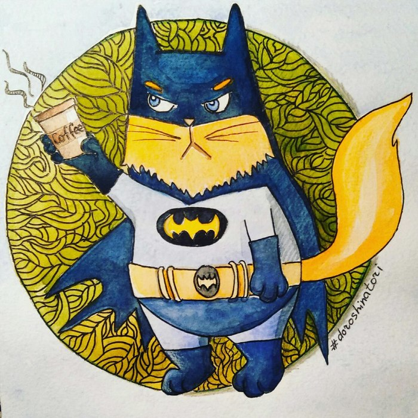

Всім нам буває важко. І в скрутну хвилину ми завжди згадуємо його, темного й неуловимого ратявника, якого призиваємо на порятунок бойовим кличем: "Йошкін кот"! Магічне створіння, яке чудом перетворює найгірші трабли сьогодення в тимчасові труднощі нашого тлінного буття. Блискавичний месник на стражі нашого майбутнього!
Кожен герой має супер здібності. І наш Йошкін кот не виняток. Завдяки супер силам він може змусити нас миттєво прокидатись і на гіпершвидкостях нестись на роботу. Завдяки призиву його магічного імені, зникає біль від катастрофічного удару мізинця правої ноги.